原文：Ze-Wei Liou 等，ReplaySSM，arXiv:2610.13778v1。原文以 CC BY 4.0 授权；本页为中文翻译，保留原文公式、数据和图形。
ReplaySSM：缓存 SSM 输入，而非状态
摘要
状态空间模型（SSM）维持固定大小的递归状态，但在每个解码步都读写该状态，可能成为混合模型的瓶颈。这种即时状态管理方式带来了大量状态读写，算术强度却很低；同时，推测解码缺乏低成本的回滚方式，而状态量化误差又会进入后续递归更新。我们提出 ReplaySSM，通过展开递推式，将状态表示为一个检查点和一个保存近期 SSM 输入的缓冲区。这将输出计算与检查点更新分离。通过定期更新检查点，ReplaySSM 避免了大多数步骤中的状态写入，使占主导的状态内存访问流量大致减半。保留近期输入还使推测解码中的回滚变成缓冲区指针操作，并支持仅计算输出的验证，无需显式构造中间状态。同样的分离机制使低精度检查点能够负责大多数步骤的输出计算，而由较高精度检查点负责递归更新，因此低精度副本的舍入误差不会进入后续更新。我们在 vLLM 中为 Mamba-2 和 Gated DeltaNet 实现了 ReplaySSM。当推理服务批量大小为 256 时，相对于经过调优的 vLLM 基线，它在四个混合模型上将标准解码加速至 –；在两个 120B 级模型上，吞吐量约为 vLLM 推测解码的 。与共享低精度检查点相比，分离状态精度还减少了输出 KL 散度和下游准确率损失。
1 引言
长思维链推理使解码成为大语言模型推理的一项主要开销。智能体工作负载通过反复调用工具和推理，进一步拉长了解码过程。Transformer 注意力将历史键和值保存在键值（KV）缓存中，其容量和每步内存访问流量都随序列长度增长，从而损害吞吐量和尾延迟。状态空间模型（SSM），例如 Mamba-2 (Dao and Gu, 2024)、Gated DeltaNet（GDN；Yang et al., 2025）和 Kimi Delta Attention（KDA；Kimi Team, 2025），则将历史信息汇总为固定大小的递归状态。其状态存储量和每步内存访问流量不随序列长度变化，但这种压缩可能降低精确回忆能力 (Jelassi et al., 2024; Waleffe et al., 2024)。混合架构通过交错配置 SSM 层和注意力层，试图在两者之间取得恰当平衡，已被广泛用于生产模型，包括 Nemotron-3 (NVIDIA, 2025)、Qwen3.5 至 Qwen3.8 (Qwen Team, 2026a, b)、Kimi-K3 (Kimi Team, 2026) 和 GLM-5.3-Flash (Z.ai, 2026a)。
然而，固定大小的状态并不意味着 SSM 解码开销很低。现有 SSM 解码逐步执行递推：每一步加载状态、更新状态、根据更新后的状态计算输出，再将状态存回。这带来三个挑战。首先，状态更新的算术强度很低：每一步都要搬运完整状态，却只进行一次衰减和一次秩 1 更新。在推理服务所用的批量大小下，即使混合模型的注意力开销随输出上下文长度增长，这些状态访问仍可能使 SSM 更新在长达 100K token 的范围内成为瓶颈（图 1 左下）。其次，更新后的状态无法低成本回滚。推测解码会一起验证多个草稿 token，当后缀被拒绝时，必须将状态恢复至最后一个被接受的 token，因此这一问题尤为突出 (Leviathan et al., 2023)。vLLM (Kwon et al., 2023) 等推理服务系统采用的变通办法是，为每个草稿 token 单独保存递归状态快照。这些写入拖慢了本已受内存带宽限制的内核，而快照存储又限制了并发量，因此推测解码在推理服务所用的批量大小下收益很小。第三，量化 SSM 状态会将舍入误差带入后续递归更新，并可能在较长的生成过程中累积。因此，大幅降低状态精度可能扭曲输出分布，并降低下游准确率。
这三个挑战引出了一个问题：为什么每一步结束后都要存储更新后的状态？展开递推式可知，当前状态等于衰减后的较早检查点，加上由近期输入构成的一小段求和。因此，ReplaySSM 用一个检查点和一个保存近期 SSM 输入的有界缓冲区来表示状态（图 1 上部）。这种表示将输出计算与检查点更新分离。在大多数步骤，即非写回步中，ReplaySSM 将新输入追加到缓冲区，并根据检查点与缓冲区计算输出，而不存储状态。只有缓冲区填满时，即写回（flush）步，才将缓冲的输入合并入检查点，并开启新窗口。除浮点计算差异外，其输出与常规解码一致。
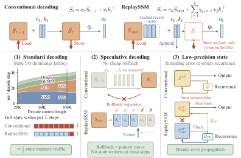
这种分离同时应对了上述三个挑战。非写回步仅写入新的输入向量和衰减因子，它们远小于状态，因此检查点写入的开销被摊销到整个窗口中，占主导的状态访问流量大致减半。保留近期输入也让推测解码中的回滚成本很低：只需移动缓冲区指针，即可丢弃被拒绝的草稿 token。由于非写回步只需要输出，验证时可以直接根据检查点和缓存输入计算输出，无需显式构造中间状态。对于低精度状态，这两种用途可以采用不同精度：低精度检查点负责非写回步的输出计算，较高精度检查点则承载跨写回步的递推，因此低精度副本的舍入误差不会进入后续更新。
本文的贡献如下：
-
•
我们提出 ReplaySSM，用检查点加近期输入缓冲区表示 SSM 状态，将输出计算与检查点更新分离，并在大多数解码步中避免写入完整状态（第 4 节）。
-
•
我们将其扩展至推测解码，利用缓存输入实现基于指针的回滚和仅输出验证（第 5 节）。
-
•
我们将其扩展至低精度状态存储，通过上述分离，使输出计算和递归更新能够使用不同的状态精度（第 6 节）。
-
•
我们在 vLLM 中实现了适用于 Mamba-2 和 GDN 的 ReplaySSM。当推理服务批量大小为 256 时，相对于经过调优的 vLLM 基线，它在四个混合模型上将标准解码加速至 –；在两个 120B 级混合专家（MoE）模型上，吞吐量约为 vLLM 推测解码的 。与共享低精度检查点相比，分离状态精度还降低了输出的 Kullback–Leibler（KL）散度及下游准确率损失（第 7 节）。
2 预备知识
2.1 状态空间模型
SSM 将 token 历史压缩为固定大小的递归状态，而不是保存不断增长的 KV 缓存。Mamba-2 的递推式为
| (1) |
其中， 为状态， ，， 是依赖于数据的标量衰减因子。我们用 表示累积衰减，规定 （当 时），并将 简记为 。 每一步都从 HBM 加载 ，计算 和 ，再将 存回。
GDN 和 KDA 等基于 Delta 规则的模型，会先修改已存储的信息，再写入新信息。GDN 的递推式为
| (2) |
其中 控制写入强度。令
| (3) |
即可得到与 Mamba-2 相同的外积形式，其中以 代替 ，代价是需要根据前一状态计算 。
2.2 推测解码与量化
3 动机与关键洞见
SSM 通过递归更新，将包含 个 token 的历史压缩为大小为 的状态。然而，直接逐步执行递推，并在每个解码步立即显式构造更新后的状态，会带来三个挑战（图 1 下部）：算术强度低、回滚开销高，以及量化误差沿递推过程传播。
3.1 挑战 1：状态读写量大，计算量却很少
常规解码每一步都读取和写入完整的递归状态，但对状态执行的计算很少；例如，Mamba-2 只进行逐元素衰减和一次秩 1 更新。因此，状态更新受内存带宽限制，状态读写占据其延迟的主要部分（附录 C.1）。人们可能以为，注意力的 KV 缓存访问流量随上下文长度增长，因此它会主导混合模型的延迟。然而，对运行于单张 B300、批量大小为 256 的 Nemotron-3-Super-120B-A12B-NVFP4 而言，在长达 100K token 的范围内，SSM 状态更新仍然是延迟最大的组成部分（图 1 左下）。这有两个原因。该模型的 SSM 层数是注意力层数的五倍，而每个 SSM 层每条序列的 FP32 状态占 4 MiB，相当于一个注意力层为 8K token 保存的 FP8 KV 缓存。一个解码步既加载又存储状态，却只加载 KV 缓存，因此在上下文长度达到约 80K token 之前，SSM 层搬运的字节数都比注意力层更多（附录 C.2）。实测交叉点接近 100K token，这与注意力内核投入了更多优化工作这一情况相符 (e.g., Dao et al., 2022)。
3.2 挑战 2：递归状态无法低成本回滚
常规 SSM 解码会立即将每个 token 的输入汇总到状态中，而这一更新没有低成本的逆操作。在推测解码中，当目标模型拒绝草稿 token 的某个后缀时，就必须回滚状态，因此这一点十分重要（图 1 下部中央）。注意力只需将 KV 缓存指针移至已接受前缀的末尾，就能自然地完成回滚。SSM 状态内部没有可供指针指向的 token 历史，因此 vLLM 等推理服务系统会为每个草稿 token 存储一个状态快照，再选择与已接受前缀对应的快照。验证 个 token 需要在本已受内存带宽限制的路径上，每步执行 次完整状态写入，还会降低推理服务的并发量。此前的工作（Wang et al., 2024a; Wu et al., 2024, 2026；第 8 节）避免了逐 token 保存快照，但仍需重新执行递推来恢复已接受的状态，因而付出额外状态访问流量；在推理服务所用的批量大小下，这些方法相较于 vLLM 快照方案的加速均不超过几个百分点（附录 A）。因此，在这类批量大小下，推测解码几乎无法为 SSM 带来加速。
3.3 挑战 3：量化误差沿递推过程传播
3.4 ReplaySSM：缓存 SSM 输入，而非状态
这三个问题都源于同一种状态管理策略：立即将每个 token 的输入汇总到状态中，并在每一步都把状态写入 HBM。递推式本身说明，这并非必要。对于 Mamba-2，令 表示一个包含 个输入的窗口之前的状态，窗口内用 进行局部索引。于是有
| (4) |
递推形式加载历史汇总状态 ，并施加当前输入；展开形式则从 和近期输入 重建相同的状态。Delta 规则模型也可以用相同方式展开（附录 B.1），只需将其更新写成外积形式（公式 3）。
因此，ReplaySSM 用一个检查点 加一个保存近期 SSM 输入的有界缓冲区 来表示状态；对于 Mamba-2，每条记录包含 。这种表示将输出计算与检查点更新分离。常规解码将两者耦合，因为输出要从刚更新的状态中读出，而该状态又必须存储下来供下一步使用。非写回步将当前输入追加到 ，并根据 和缓冲区计算输出，而不存储状态。当缓冲区达到容量上限时，写回步将缓冲的输入合并入 ，计算输出，将新检查点写入 HBM，并清空缓冲区。因此，状态写入仅发生在写回步；除浮点计算差异外，输出与常规解码一致（图 1）。第 4 至第 6 节基于这种分离，分别讨论标准解码、推测解码和低精度状态；第 8 节回顾相关工作。
4 面向标准解码的 ReplaySSM
标准解码最容易说明这种分离如何减少状态的内存访问流量（挑战 1）。其核心操作是根据检查点和缓存的输入重建当前状态。对于检查点 和重放缓冲区 ，定义
| (5) |
ReplaySSM 解码步骤（Mamba-2）。 算法 1 对应标准解码。 算法 2 在其基础上扩展为每一步验证 个 token，并仅提交已接受前缀。 算法 3 增加第二种检查点精度， 相对于算法 2 的改动以彩色标出。
算法 1 对每个 token 执行一次此操作。 第 1–3 行追加当前输入、重建状态并计算输出；唯一一次完整状态存储位于写回分支中的第 5 行。 算法 2 和 3 分别在第 5 节和第 6 节中对其进行扩展。对于 GDN，每条记录存储修正量 而非 ，写回时重放相同的求和项 （附录 B.2）。
常规解码每一步都读取和写入完整的递归状态。ReplaySSM 仍在每一步读取 ，因为输出计算需要它，但只在更新检查点时写入状态。 非写回步只向 追加当前输入。 在一个包含 步的窗口内，两种方法都会执行 次完整状态读取；常规解码还会执行 次完整状态写入，而 ReplaySSM 只写入一次，另外再进行缓冲区的读写。 由于缓冲区远小于状态，ReplaySSM 将占主导的状态内存访问流量大致减半 （附录 C.3）。
窗口大小 在检查点写入和重放开销之间进行权衡。 较大的 能将每次检查点写入的开销分摊到更多步骤，但会增加每一步加载和应用的缓冲输入数量。 本文始终使用 （附录 C.5）。
5 面向推测解码的 ReplaySSM
| 模型 | SSM | 权重 |
|---|---|---|
| Nemotron-3-Nano-4B | Mamba-2 | BF16 |
| Nemotron-3-Super-120B-A12B | Mamba-2 | NVFP4 |
| Qwen3.5-4B | GDN | BF16 |
| Qwen3.5-122B-A10B | GDN | NVFP4 |
在推测解码中，ReplaySSM 保留了标准解码的流量节省 （第 4 节），并从另外两个方面改变目标模型验证草稿 token 的方式： 缓存输入使回滚成本很低，而仅输出求值避免了显式构造中间递归状态。
5.1 利用缓存输入实现低成本回滚
只有在目标模型完成验证后，才能知道已接受前缀的长度 （第 2.2 节）。因此，ReplaySSM 首先将本轮验证中全部 个 token 的 SSM 输入追加到重放缓冲区，验证后再通过移动缓冲区指针，仅提交已接受前缀。 算法 2 给出了 Mamba-2 的具体流程。 草稿记录写在 条已提交记录之后（第 1 行），全部 条记录都用于输出计算（第 3 行）。 只有返回输出后（第 9 行），才能得知接受长度 ，随后据此推进 （第 10 行）。 被拒绝的记录位于位置 之后，会在下一次追加时被覆盖。 写回分支（第 4–8 行）只将已提交输入合并入检查点，因此可在得知接受结果之前执行。 非写回步只写入较小的输入记录，只有写回步才写入检查点。 附录 A 将每一步的状态访问流量与 vLLM 为每个草稿保存快照的方案，以及第 3.2 节中的既有恢复方法进行了比较。
我们将 实现为容量为 的环形缓冲区，可容纳 条已提交记录和 条草稿记录。因此，丢弃已提交前缀 （第 8 行）只需推进环形缓冲区起点，无需向前复制草稿记录。 当 时执行写回，可保证验证后的已提交长度不超过 （附录 D.1）。与标准解码固定的 步间隔不同，此时写回频率取决于接受情况，因为接受得越多，缓冲区就填满得越快。
5.2 仅输出验证
这种分离还使非写回步既无需存储状态，也无需显式构造状态。 常规解码必须生成更新后的状态，因为下一步要使用它。 在 ReplaySSM 中，后续步骤不会读取非写回步的状态，因此该步只需要计算输出。 对于从零状态出发的一次 Mamba-2 更新，、 和 的乘积可按两种方式加括号， ：左侧显式构造 的状态，而右侧先计算标量 ，再用它缩放 。 我们将右侧形式称为仅输出求值。
对于验证，令 和 分别以列的形式存储缓冲区中 个值和键，其中已提交记录排在前面，并令 。同样的思路得到
| (6) |
其中， 是对角矩阵，且 ； 表示逐元素乘积， 在因果掩码下存储累积衰减， 适用于 ，否则为 。 该掩码将每个草稿查询的可见范围限制为已提交历史，以及不晚于其自身位置的草稿。 仅输出形式有两个优点：它从不显式构造状态，因此需要的 FLOPs 更少 （附录 C.4）；对于共享键和查询的每组值头， 只需计算一次。 这两点在推测解码中更为重要，因为验证 个 token 会成倍增加每一步的算术运算量。 除浮点差异外，所得输出与递归求值一致。 GDN 也可以采用相同的形式。其草稿修正量依赖窗口内更早的草稿，附录 B.3 得到全部 个修正量的方法，是执行一次 三角方程求解。 式 6 也具有预填充和训练内核中的分块形式，其中一个块由缓冲输入及其后的草稿组成 （第 8 节）。
6 面向低精度状态的 ReplaySSM
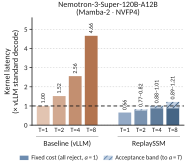
以较低精度存储状态可以减少内存访问流量，并可能降低受内存带宽限制的 SSM 内核的延迟。 在常规解码中，同一份已存储状态既用于计算输出，又作为下一次更新的输入，因此其舍入误差在每一步都会重新进入递推 （第 3.3 节）。上述分离从两个方面改变了这一点。 首先，状态从每一步量化一次变为每个窗口量化一次；不过，如果仅使用一个低精度检查点，舍入误差仍会进入后续更新。 更重要的是，非写回步读取状态只为计算输出，而写回步负责更新承载后续递推的检查点，因此这两种用途可以采用不同精度。
7 评测
7.1 实验设置
我们评测了来自两个系列的四个混合模型：具有 Mamba-2 层的 Nemotron-3，以及具有 GDN 层的 Qwen3.5（表 1）。每个模型均运行于单张 GPU，不使用张量并行。 我们在 vLLM 中实现 ReplaySSM （附录 D），并与启用 CUDA 图、经过调优的常规 vLLM 解码比较。 所有性能实验均以 FP32 存储递归状态，这是四个模型的默认设置。 第 7.4 节仅降低状态精度，权重保持发布时的格式（表 1）。 我们用 表示批量大小， 表示重放窗口大小， 表示验证长度，即每一步验证的 token 数量（ 为标准解码）；用 表示其中被提交的 token 数量，；用 表示生成长度。 标准解码报告整个模型每个解码步的延迟，以及独立 SSM 内核的延迟。 推测解码报告以每秒生成 token 数衡量的推理服务吞吐量（包含预填充），以及独立验证内核的延迟。 低精度实验在 PG-19 上采用教师强制，测量相对于常规 FP32 状态解码的 KL 散度 (Rae et al., 2019)，其中 最长为 128K 个 token；此外，还测量 MMLU-Pro (Wang et al., 2024b)、 GPQA-Diamond (Rein et al., 2023) 和 MATH 的 Level 5 子集 (Hendrycks et al., 2021)（Math-L5）上的生成答案准确率。 详细设置见附录 E.1。
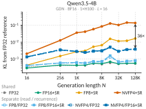
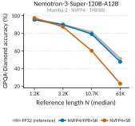
7.2 标准解码
基线为每个模型采用最快的内核启动配置，其性能优于 Mamba-2 随附的默认配置 （附录 E.2.1）。 在 、 时，对于四个模型，ReplaySSM 将 SSM 内核加速 –，将整个解码步加速 – （图 2）。 内核收益来自第 4 节所述的流量减少，出现在常规内核受内存带宽限制的情形中。 附录 E.2.1 遍历了从 1 到 512 的批量大小，并报告常规内核达到的 HBM 带宽。 在 时，内核受延迟限制，ReplaySSM 的端到端性能与基线相差仅几个百分点。 此后，加速比随批量大小增大，直至常规内核达到带宽饱和。 由于注意力与模型其余部分保持不变，端到端收益受 SSM 在解码步中所占比例的限制；这一比例随批量大小增大，因此端到端收益也随之增加。 我们使用 ，因为在附录 E.2.2 的窗口大小遍历测试中，该设置在 时对四个模型都给出了最低的摊销内核延迟；附录 C.5 的流量分析也预测了这一结果。
7.3 推测解码
我们在 、 时评测了两个采用 NVFP4 权重的 120B 级模型 （表 1），使用各模型的 MTP 头，在 GSM8K 提示词 (Cobbe et al., 2021) 上生成草稿，每个请求生成 256 个 token。 图 3 将推理服务吞吐量与常规 vLLM 的标准解码和推测解码进行比较。 为每个草稿 token 存储状态快照，会在每一步增加 次状态写入，并限制 GPU 内存所允许的并发量，因此常规推测解码在 之后不再获得收益，而在 Qwen3.5-122B-A10B 的 设置下，其性能低于标准解码。 ReplaySSM 的性能则随批量大小继续提升。 在 时，在接受长度匹配的情况下，其吞吐量分别达到常规推测解码的 和 ，以及标准解码的 和 。 附录 E.3 给出了推理服务设置、完整 和 参数网格上的吞吐量，以及接受长度。 更快的验证内核是收益的另一来源。 图 4 展示了该内核在 Nemotron-3-Super-120B-A12B、 时的开销。 常规验证为每个 token 存储一份快照，因此延迟随 增长，最高达到标准解码单步延迟的 （ 时）。 包含写回开销后，ReplaySSM 验证八个 token 所需时间仅为标准单步的 –。 该区间覆盖从全部草稿被拒绝到全部被接受的情况，因为接受得越多，缓冲区就填满得越快，写回也越频繁。 GDN 内核呈现相同趋势 （附录 E.3.2）。
7.4 低精度状态
| 检查点配置 | MMLU-Pro | GPQA-Diamond | Math-L5 |
|---|---|---|---|
| 常规 FP32（参考） | |||
| ( / / / ) | ( / / / ) | ( / / / ) | |
| 共享 FP16+SR | |||
| ( / / / ) | ( / / / ) | ( / / / ) | |
| 共享 FP8+SR | |||
| ( / / / ) | ( / / / ) | ( / / / ) | |
| 共享 NVFP4+SR | |||
| ( / / / ) | ( / / / ) | ( / / / ) | |
| 分离 FP8 / FP16+SR | |||
| ( / / / ) | ( / / / ) | ( / / / ) | |
| 分离 NVFP4 / FP16+SR | |||
| ( / / / ) | ( / / / ) | ( / / / ) | |
| 分离 NVFP4 / FP8+SR | |||
| ( / / / ) | ( / / / ) | ( / / / ) |
低精度状态可以降低延迟 （附录 E.4.2），但可能扭曲输出分布并降低下游准确率。 我们比较了两类方案：一类是同时用于输出计算和递归更新的共享检查点（FP32、FP16、FP8 或 NVFP4）；另一类是将读取检查点与递推检查点分离（FP8 或 NVFP4 读取，配合采用随机舍入 SR 的 FP32 或 FP16 递推）。 所有设置均采用 ，格式见附录 E.4.1。 量化仅应用于解码阶段，预填充以全精度计算状态。 这些实验采用标准解码。推测解码改变每一步验证的 token 数量，接受情况决定何时写回，但两者都不改变哪些数值会被舍入，因此误差机制相同。 图 5 展示了 Qwen3.5-4B 相对于 FP32 状态解码的输出 KL。 如第 3.3 节所述，共享 FP8 和 NVFP4 检查点的误差随生成长度累积，而保持 FP32 递推可消除其中的大部分误差。 在 128K 个 token 时，NVFP4 读取配合 FP32 递推将 KL 从 0.136 降至 0.0038，约降低 。 剩余部分是读取误差本身，它不随 增长，但使 NVFP4 读取的误差仍比 FP32 数值噪声基线高出数倍。 FP16+SR 递推的结果与 FP32 递推非常接近，因此半精度递推检查点已足够，我们在准确率评测中采用这一设置。 附录 E.4.3 给出了 KL 测量流程和其他三个模型的曲线；这些曲线也体现了同样的分离效果，只是幅度因模型而异。 附录 E.4.4 改变了 。 共享检查点每个窗口重新量化一次，因此其误差随 增大而下降 （第 6 节），而分离配置几乎不变。
表 2 展示了对下游任务的影响，各行分别列出读取 / 递推精度。 共享 NVFP4+SR 检查点在四个模型上的 GPQA-Diamond 准确率平均下降 13.05 个百分点，在 MMLU-Pro 和 Math-L5 上分别下降 5.88 和 10.92 个百分点。 NVFP4 读取配合 FP16+SR 递推将这些下降幅度缩小至 2.36、0.15 和 0.10 个百分点；配合 FP8+SR 递推时，则分别为 1.77、0.40 和 0.38 个百分点。 共享 FP16 和 FP8 检查点虽然 KL 高于数值噪声基线，但准确率与 FP32 的差异仍处于基准测试噪声范围内，因此准确率只能分辨较大的 KL 差距。 附录 E.4.6 给出了各模型的表格及输出长度。 准确率损失集中于较长的生成，这与误差在生成过程中累积相一致。 GPQA-Diamond 的生成长度是三个基准中最长的；在 Nemotron-3-Super-120B-A12B 上，其参考长度最高四分位组的中位数为 61K 个 token，而 MMLU-Pro 和 Math-L5 约为 8K。 在该任务中，共享 NVFP4+SR 与 FP32 的准确率差距，从两个较短四分位组的 0–2 个百分点，增长至两个较长四分位组的 20.9 和 28.2 个百分点；而 NVFP4 读取配合 FP8+SR 递推时，后两组的差距保持在 2.0 和 3.4 个百分点 （图 6）。 附录 E.4.7 对所有模型和基准重复了这一分析。
8 相关工作
分块 SSM 算法与前缀缓存。
Mamba (Gu and Dao, 2023) 使 SSM 递推依赖输入，并通过感知硬件特性的并行扫描保持线性复杂度。 Mamba-2 (Dao and Gu, 2024) 将衰减限制为每个头一个标量，并通过结构化状态空间对偶性，以矩阵乘法组织分块计算。 GDN (Yang et al., 2025) 将这种衰减与 Delta 规则的定向更新 (Schlag et al., 2021) 结合，而 KDA (Kimi Team, 2025) 则采用逐通道衰减。这些递推通过 WY 表示 (Bischof and Van Loan, 1987) 和 UT 变换 (Joffrain et al., 2006) 保持分块并行性，沿用的是 Yang et al. (2024) 的 DeltaNet 算法。 这些工作均优化训练和预填充中的计算吞吐量。ReplaySSM 则针对受内存带宽限制的自回归解码，将输出计算与检查点更新分离，使状态仅在写回时才被写入。 由于非写回步直接根据检查点和缓存的近期输入计算输出，因此可以复用这些分块算法：将缓冲输入与其后的当前 token 或待验证 token 一起作为一个块。 Marconi (Pan et al., 2025) 为混合模型引入前缀缓存，其准入和淘汰策略权衡递归状态的复用收益与存储成本。 前缀缓存避免重复的预填充计算，而 ReplaySSM 减少解码阶段的状态访问流量，因此两者针对不同阶段，可以结合使用。
SSM 推测解码。
注意力通过向后移动 KV 缓存的序列指针处理回滚，被拒绝的键和值不会再被读取。 SSM 无法这样做，因为一旦草稿 token 已被立即汇总到状态中，恢复之前的状态就需要较高成本。 因此，vLLM (Kwon et al., 2023) 等推理服务系统通过在每个经验证 token 之后存储状态快照，再选择与已接受前缀对应的快照来解决这一问题。 这种方法每一步需要一次读取和 次写入，而标准解码只需一次读取和一次写入；每个请求的 份快照还限制了 GPU 内存所允许的并发量。 既有工作避免了逐 token 快照，但恢复已接受状态仍需额外的状态访问流量；在推理服务批量大小下，这些方法相对于快照方案的加速均不超过几个百分点 （附录 A）。The Mamba in the Llama (Wang et al., 2024a) 将恢复融合进验证内核，根据缓存输入在检查点上重放已提交 token，并同时存储检查点和结束状态，每一步需要一次读取和两次写入。 Snakes and Ladders (Wu et al., 2024) 通过两种方式之一，对已接受前缀重新执行状态更新。 Activation Replay 根据缓存输入，在单独启动的内核中执行此操作。 Joint Attainment 则为下一次验证追加经过填充的回溯序列；由于该序列长度可变，还需要为每一种可能的接受结果分别捕获一个 CUDA 图。 两种方案都在检查点与工作状态之间进行复制，每一步需要三次读取以及三次或四次写入。 STree (Wu et al., 2026) 将重放扩展到树形草稿。每一步先在检查点上原地重放已接受 token，需要一次读取和一次写入；随后通过带掩码的树扫描验证草稿，该扫描读取状态而不进行写入，因此每一步总计两次读取和一次写入。 这些开销意味着：推测解码虽然能稳定加速 Transformer，但在推理服务批量大小下对 SSM 几乎没有帮助 （图 3），构成了一个显著劣势。
ReplaySSM 同样缓存输入而非状态，但并不利用缓存来恢复验证后的状态。 无论标准解码还是推测解码，检查点与近期输入缓冲区本身就是状态的表示，并使输出计算与检查点更新分离。 检查点加上缓冲区的任意前缀，就表示接受了相应数量 token 之后的状态，因此恢复永远无需重新执行递推。 回滚只移动缓冲区指针；验证只读取检查点一次，并根据缓冲区计算输出，无需显式构造状态；检查点仅在写回时写入，即每个包含 个已提交 token 的窗口写入一次。 因此，大多数步骤只读取状态一次，不进行任何状态写入。 附录 A 在同一种层形状下比较了所有方法的状态访问流量和内核延迟。
SSM 状态量化。
Q-Mamba (Tianqi et al., 2025) 在训练后量化 Mamba 的权重、激活和递归状态。 针对状态，它提出了解耦尺度量化（Decoupled Scale Quantization），沿状态维度和通道维度采用独立尺度来吸收状态中的离群值；还提出高效选择性重建（Efficient Selectivity Reconstruction），在校准数据上微调约百分之二的参数。 其误差分析包含上一时间步的舍入误差经衰减传递的项，但训练模拟认为该项很小而将其忽略；推理时，量化状态仍然作为下一次更新的输入。 其评测长度止于 2048 个 token。本文部分作者参与的 Nemotron 3 Ultra 报告 (NVIDIA, 2026) 使用随机舍入将 Mamba 状态缓存量化为 FP16 或 8 位，并探索周期性缓存检查点机制：每隔 步才存储和量化一次状态，其间通过重放缓存的输入激活来推进状态。 这对应 ReplaySSM 的第一个收益 （第 6 节），即减少每个 token 的量化次数；该报告发现了与附录 E.4.5 所测得的相同的就近舍入偏差。 它保留一个量化状态，同时用于生成输出和为下一次更新提供输入，因此舍入误差仍会进入递推，只是频率降低了。 ReplaySSM 从递推中移除了这一项。输出计算与检查点更新的分离使两种用途可以采用不同精度：高精度检查点承载递推，低精度副本仅为输出计算而读取。 剩余误差来自各次输出所用读取副本的舍入，第 7.4 节将对此的测量扩展到了 128K 个 token。 Q-Mamba 的解耦尺度可进一步减少这部分剩余的读取误差，并可应用于任一检查点。
9 结论与未来工作
常规 SSM 解码每一步都读取和写入状态，将输出计算与状态更新融合在一起。 ReplaySSM 展开递推，将状态表示为检查点加上近期输入缓冲区，从而使输出计算与检查点更新分离。 大多数步骤只计算输出而不写入状态，检查点每个窗口写入一次。 这种分离将占主导的状态访问流量大致减半，使推测解码的回滚变为缓冲区指针移动，并采用仅输出验证；同时，它让低精度读取检查点不参与递推，使其舍入误差不会随生成长度累积。 在常规内核受内存带宽限制的推理服务批量大小下，vLLM 中的 ReplaySSM 将标准解码加速 –，在两个 120B 级模型上提供约为 vLLM 推测解码 的吞吐量；在测量的最长生成长度下，精度分离将 NVFP4 检查点的输出 KL 降低 –。 ReplaySSM 已被大规模生产模型采用，并集成到 LLM 推理服务系统中 （附录 G）。
每一步仍然需要读取检查点，这次读取是下一步的优化目标。 检查点在参与每一步计算时会乘以各头的累积衰减，因此，当某个头的衰减已小到可以忽略时，该头可以在非写回步跳过读取，并将写回变为纯写入操作。 附录 F 概述了这一方向。
参考文献
- The wy representation for products of householder matrices. SIAM Journal on Scientific and Statistical Computing 8 (1), pp. s2–s13. Cited by: §8.
- Training verifiers to solve math word problems. arXiv preprint arXiv:2110.14168. Cited by: §E.3, §7.3.
- Stochastic rounding: implementation, error analysis and applications. Royal Society Open Science 9 (3), pp. 211631. Cited by: §2.2.
- ReplaySSM: cache SSM inputs, not state. Note: Dao AI Lab blogAccessed: 2026-09-30 External Links: Link Cited by: Appendix G.
- Flashattention: fast and memory-efficient exact attention with io-awareness. Advances in neural information processing systems 35, pp. 16344–16359. Cited by: §C.2, §3.1.
- Transformers are ssms: generalized models and efficient algorithms through structured state space duality. arXiv preprint arXiv:2405.21060. Cited by: §1, §8.
- Mamba: linear-time sequence modeling with selective state spaces. arXiv preprint arXiv:2312.00752. Cited by: §8.
- Deep learning with limited numerical precision. In International conference on machine learning, pp. 1737–1746. Cited by: §2.2.
- Measuring mathematical problem solving with the math dataset. arXiv preprint arXiv:2103.03874. Cited by: §7.1.
- RULER: what’s the real context size of your long-context language models?. arXiv preprint arXiv:2404.06654. Cited by: §E.4.6.
- Repeat after me: transformers are better than state space models at copying. arXiv preprint arXiv:2402.01032. Cited by: §1.
- Accumulating householder transformations, revisited. ACM Transactions on Mathematical Software (TOMS) 32 (2), pp. 169–179. Cited by: §8.
- Kimi linear: an expressive, efficient attention architecture. arXiv preprint arXiv:2510.26692. Cited by: §1, §8.
- Kimi K3: open frontier intelligence. arXiv preprint arXiv:2607.24653. Cited by: Appendix G, §1.
- Efficient memory management for large language model serving with pagedattention. In Proceedings of the 29th symposium on operating systems principles, pp. 611–626. Cited by: §1, §8.
- Fast inference from transformers via speculative decoding. In International conference on machine learning, pp. 19274–19286. Cited by: §1, §2.2.
- NVIDIA H100 Tensor Core GPU. Note: https://www.nvidia.com/en-us/data-center/h100/ Cited by: §C.1.
- NVIDIA Nemotron 3: efficient and open intelligence. arXiv preprint arXiv:2512.20856. Cited by: §1.
- Nemotron 3 Ultra: open, efficient mixture-of-experts hybrid Mamba-Transformer model for agentic reasoning. arXiv preprint arXiv:2606.15007. Cited by: §8.
- Marconi: prefix caching for the era of hybrid llms. Proceedings of Machine Learning and Systems 7. Cited by: §8.
- Qwen3.5: accelerating productivity with native multimodal agents. External Links: Link Cited by: §1.
- Qwen3.8-Max: a new bar for coding and cowork. External Links: Link Cited by: §1.
- Compressive transformers for long-range sequence modelling. arXiv preprint arXiv:1911.05507. Cited by: §E.4.3, §7.1.
- Gpqa: a graduate-level google-proof q&a benchmark. arXiv preprint arXiv:2311.12022. Cited by: §7.1.
- Linear transformers are secretly fast weight programmers. In International conference on machine learning, pp. 9355–9366. Cited by: §8.
- Q-mamba: towards more efficient mamba models via post-training quantization. In Findings of the Association for Computational Linguistics: ACL 2025, pp. 10594–10610. Cited by: §8.
- An empirical study of mamba-based language models. arXiv preprint arXiv:2406.07887. Cited by: §1.
- The mamba in the llama: distilling and accelerating hybrid models. In Advances in Neural Information Processing Systems, Vol. 37. Cited by: Appendix A, §3.2, §8.
- Mmlu-pro: a more robust and challenging multi-task language understanding benchmark. Advances in Neural Information Processing Systems 37, pp. 95266–95290. Cited by: §7.1.
- Snakes and ladders: accelerating state space model inference with speculative decoding. In Proceedings of the 4th NeurIPS Efficient Natural Language and Speech Processing Workshop, Proceedings of Machine Learning Research, Vol. 262, pp. 292–304. Cited by: Appendix A, §3.2, §8.
- STree: speculative tree decoding for hybrid state space models. Advances in Neural Information Processing Systems 38, pp. 115588–115608. Cited by: Appendix A, §3.2, §8.
- Gated delta networks: improving mamba2 with delta rule. In International Conference on Learning Representations, Vol. 2025, pp. 29687–29707. Cited by: §1, §8.
- Parallelizing linear transformers with the delta rule over sequence length. Advances in neural information processing systems 37, pp. 115491–115522. Cited by: §B.3, §8.
- GLM-5.3-Flash: frontier intelligence, flash cost. Note: Z.ai blogAccessed: 2026-09-19 External Links: Link Cited by: Appendix G, §1.
- Toward recursive self-improvement: how GLM built its own inference infrastructure. Note: Z.ai blogAccessed: 2026-09-30 External Links: Link Cited by: Appendix G.
附录 A 推测解码与已有方法的比较
本附录比较 ReplaySSM 验证与已有四类 SSM 状态管理方式在验证阶段的内核级开销，包括 vLLM 的逐 token 快照、The Mamba in the Llama (Wang et al., 2024a)、Snakes and Ladders (Wu et al., 2024) 的两个变体，以及 STree (Wu et al., 2026)。所有方法均在一张 B300 上运行，采用 Nemotron-3-Super-120B-A12B 的 Mamba-2 层形状与 FP32 状态，批量处理 个请求，每个请求对应一条草稿链。一个状态，即一个请求在一层中的状态，为 MB，因此该批次每层共有 GB 状态。 表示每个验证步处理的 token 数， 表示提交的 token 数。本比较不涉及树形草稿，因此 STree 使用单链，其树掩码退化为因果掩码。
已有内核取自作者代码仓库：STree 使用提交 b9a0c2411 1 https://github.com/wyc1997/stree，The Mamba in the Llama 使用提交 b702a3e22 2 https://github.com/itsdaniele/speculative_mamba；我们只做了使其能在当前 Triton 下以该形状运行的必要修改。Snakes and Ladders 没有独立仓库。STree 与其第一作者相同，且仓库实现了这两个变体，因此我们采用该实现。对每种方法，我们计时其实现完成一个验证步所启动的内核。
所有基线均经过调优。两个已有仓库均硬编码了一种启动配置，而 vLLM 内核通过启发式规则选择配置，因此我们遍历测试每个内核的启动配置，并报告其最佳结果。33 3 在 、 时，调优将 STree 的每步内核延迟从 降至 s，The Mamba in the Llama 从 降至 ，Snakes and Ladders 的 Activation Replay 从 降至 、Joint Attainment 从 降至 ，vLLM 内核从 降至 。在 至 范围内，已有内核的加速比为 –，vLLM 内核为 –。STree 已发布执行路径耗时 s（），而其算法本身为 。此外，我们测量的是 STree 的算法本身，即带掩码的重放加只读树扫描，而非其已发布执行路径；后者额外执行两次状态复制，在单链情况下这两次复制都是恒等操作，却会使其慢 –。我们使用的分块大小为 16，而不是默认的 256；默认值会把 个 token 的窗口填充到 256 个位置。
A.1 每步操作与状态访问流量
R 和 W 分别表示一次完整的状态读取与写入。
-
•
vLLM. 启动一次内核。内核读取状态一次，并在处理每个 token 后，将状态存入该 token 的槽位，共处理 个 token。因此，被接受 token 的快照就是下一状态，无需恢复过程。开销为 ，与接受情况无关。
-
•
The Mamba in the Llama. 启动一次融合内核。它读取检查点；若所有草稿均被接受，则读取末尾状态；随后从缓存输入重放上一步提交的 token，存储新检查点，处理当前 个 token，再存储末尾状态。无论接受情况如何，开销都是 ，因为即使跳过重放，也仍然存储检查点；串行链最长为 步。
-
•
Snakes and Ladders, Activation Replay. 启动三次内核。多步扫描先在检查点上原地重新处理已提交的 token，再将检查点复制到工作缓冲区，最后由同一内核在该缓冲区上原地执行验证。每次使用该内核都要读取和写入状态，因此开销为 。带掩码的重放始终运行 步，所以开销与接受情况无关。此路径就是 STree 论文中的 “Vanilla SD” 基线。
-
•
Snakes and Ladders, Joint Attainment. 使用同一内核，但不缓存激活。每个请求在一次内核启动中贡献两行：一行是填充后的回溯行，重新处理已提交的 token；另一行是草稿行，继续处理草稿。两行均从两个步骤之前验证得到的状态开始。随后，一次 gather 操作将回溯行的状态复制到两行。开销为 ；将批次填充至统一长度后，需要 个串行步骤。
-
•
STree. 启动两次内核。带掩码的重放先在检查点上原地执行，随后分块扫描内核验证草稿，将该状态读作初始状态，但不写入状态。开销为 ，与接受情况无关。已发布执行路径还增加一次 beam-select 自复制和一次检查点到工作状态的复制，总计 。
-
•
ReplaySSM. 非写回步读取检查点一次，并根据检查点和输入缓冲区计算输出（）。写回步大约每 步发生一次，还会写入新检查点（）。
表 3 将上述次数与 Nsight 测得的单步字节数作了对照。
| 方法 | R/W | 模型估算（GB） | Nsight（GB） | 说明 |
|---|---|---|---|---|
| vLLM 快照 | – | – | 随 增长 | |
| The Mamba in the Llama | – | 一次融合内核启动 | ||
| Snakes and Ladders, Activation Replay | – | 重放、复制、验证 | ||
| Snakes and Ladders, Joint Attainment | – | 两行，然后执行收集（gather）操作 | ||
| STree 算法 | – | 重放、只读验证 | ||
| STree 已发布路径 | – | 额外两次复制 | ||
| ReplaySSM 非写回步 | – | 不写入状态 | ||
| ReplaySSM 写回步 | – | 每隔 步一次 |
A.2 结果
图 7 在图 4 的基础上加入了 STree 和 The Mamba in the Llama。在这一批大小下，两者均未优于 vLLM 的快照方案。STree 耗时是 vLLM 内核的 （）和 （）；The Mamba in the Llama 则仅低约 ，且只发生在 、接受情况对应开销最低时。Snakes and Ladders 的两个变体更慢：Activation Replay 耗时为 vLLM 内核的 –，Joint Attainment 为 –，故图中未展示。原论文中，在批大小为一时，Joint Attainment 是两者中更快的方案；但在这里，每个请求的第二行使验证内核启动时访问的状态字节数翻倍，并延长了串行链。所有 token 均提交时，ReplaySSM 相对 STree 和 The Mamba in the Llama 分别加速 – 和 –；仅提交一个 token 时，分别加速 – 和 –。
已有论文报告的是小批大小下相对常规标准解码的加速。在小批量情况下，解码步主要受模型权重加载开销支配，而每步验证 个 token 可将这次加载分摊到多个 token 上。该收益来自推测解码本身，与 SSM 状态的处理方式无关。在推理服务批量大小下，权重加载已被分摊，状态访问流量成为瓶颈（第 3.1 节），因此状态恢复的开销决定了推测解码是否划算；在这一设置中，已有方法均不比 vLLM 的快照方案划算。
表 3 还表明，对这些方法而言，访问字节数减少并未带来更低的延迟。在 时，STree 和 The Mamba in the Llama 访问的状态字节数比 vLLM 内核少 –，但速度并未更快。其恢复内核采用串行递推，在 或 步中始终将状态块保存在寄存器内，这会限制占用率，使大部分 DRAM 带宽闲置； 越大，这一现象越明显。
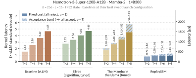
附录 B GDN 推导与算法
B.1 外积形式与展开形式
外积形式。
展开形式。
B.2 标准解码
算法 4 是算法 1 对应的 GDN 版本。二者的区别在于最初几个步骤的顺序。Mamba-2 先追加记录，再重建状态，因为在该步骤开始之前 就已知。GDN 则先重建 （第 1 行），因为第 2 行的修正量需要 ，然后才追加 并推进状态（第 3–4 行）。根据式 8，第 4 行等价于对更新后的缓冲区执行 ，因此写回分支保持不变。
修正量 根据重建状态以 FP32 计算。使用 BF16 激活时，我们以 FP16 而非 BF16 缓存修正量，因为在相同存储开销下，FP16 能保留结果的 10 位尾数，而 BF16 只能保留 7 位。
B.3 推测解码
GDN 使用第 5.2 节的仅输出求值来验证草稿，并沿用算法 2 的缓冲区管理方式：草稿记录写在已提交记录之后，通过移动 来提交已接受前缀。困难在于，草稿的修正量依赖其之前的状态（式 3），其中包含窗口内更早草稿的影响。仅输出验证仍然适用：这 个草稿修正量可由一次 三角方程求解获得，随后用修正量替代值向量，应用式 6。算法 5 给出了整个步骤。
设草稿 位于窗口位置 。将式 8 应用于 ，可得
| (9) |
其中 的项使用已缓存的修正量； 的项涉及更早的草稿，其修正量尚未知。令 、 分别存放已提交的修正量和键，、 分别存放草稿值和键，并令 。将式 9 代入 ，对全部 个草稿进行这一操作，并将未知量收集为 的列，得到
| (10) |
其中，（当 时），否则为 ； 是式 6 的对角衰减矩阵， 取自式 6 中矩阵的前 行，该矩阵即大小为 的 。已知部分 具有式 6 的形式，只是以草稿键替代查询。 为单位上三角矩阵，因此一次 三角方程求解即可得到 ；这就是用于并行化 Delta 规则训练的 UT 变换 (Yang et al., 2024)。令 ，在式 6 中以 替代 即得输出：
| (11) |
仅通过 和 参与计算，对检查点遍历一次即可同时计算二者。
B.4 低精度状态
算法 3 能防止低精度误差进入递推，是因为 Mamba-2 记录保存原始输入：写回从高精度检查点重放 记录，从低精度副本读取的任何内容都不会写回。GDN 记录保存修正量，而每个修正量都由对应步骤读取的状态计算而来（式 3）。在非写回步，该状态来自低精度检查点，因此缓存的 携带其舍入误差。如果写回时把这些修正量合并到高精度检查点，误差就会进入递推，且每个写回周期都会增加自身的误差：检查点误差变成对所有过去周期的求和。当衰减小于一时，该和有限；但随着衰减趋近于一，该和会无界增长。因此，合并缓存修正量只在某个依赖数据的条件下才稳定。
我们通过同时缓存原始输入来避免这一问题。两种精度的变体中的 GDN 记录保存 。非写回步仍像此前一样使用 。写回时忽略缓存修正量，沿式 8 从高精度检查点重新推导修正量，即 ，其中 位于高精度路径。这样，低精度副本就永远不会进入递推，高精度路径除自身舍入外是精确的，与 Mamba-2 一样。只有当读取检查点为低精度时，这两条写回路径才存在此处的差异。缓存修正量携带计算它时所用状态的舍入误差，因此合并它就会把误差写入检查点，让之后的每个窗口继承该误差。从高精度检查点和缓存的原始输入重新推导修正量，则合并的是不含这种误差的值，误差因而只留在写回前计算的输出中。若检查点为 FP32，唯一的区别是：缓存修正量以 FP16 记录格式存储，而重新推导的修正量是在运行时以 FP32 形成的。因此，我们的 FP32 加速测量合并缓存修正量，而所有低精度结果都重新推导修正量。
B.5 算法符号说明
| 符号 | 含义（Mamba-2） | GDN |
|---|---|---|
| HBM 中的检查点状态，即上一个已写回窗口结束时的递归状态。 | 相同 | |
| , | 检查点的高、低精度副本。HP 负责跨写回的递推；LP 用于非写回步的输出计算。 | 相同 |
| 片上工作状态；仅在写回时作为新检查点写入 HBM。 | 相同 | |
| , | 单个 token 的 SSM 输入：衰减、值、键和查询（式 1）。 | 输入为 ，写入强度为 （式 2）。记录存储修正量 以替代 ；采用两种精度时，记录为 。 |
| , , | – | 修正量 （式 3）；已提交修正量与草稿修正量按矩阵列排列（式 10）。 |
| , | 重放缓冲区及其位置 至 的记录；位置 处保存的是自上次写回以来最早的记录。 | 相同 |
| 已提交记录 的数量。标准解码在追加时提交；推测解码在验证后提交草稿。 | 相同 | |
| 重放窗口大小，即写回前允许保留的最大已提交历史长度：满足 时标准解码写回，满足 时推测解码写回。 | 相同 | |
| , , | 每个验证步的 token 数， ；对应记录为 ，查询为 。 | 包含 。 |
| 验证后提交的 token 数， 。 | 相同 | |
| 将记录 至 应用于 后得到的状态（式 5）。 | 记录提供 （式 8）；采用两种精度时，写回首先重新计算 ，计算使用 并在 HP 路径上进行。 | |
| 共 个输出，对应查询 ，由 和记录计算，无需显式构造中间状态（式 6）。 | 使用式 11，以 替代 ；这要求先求解式 10 得到 。 | |
| 当前步骤加载的检查点精度：写回步为 HP，否则为 LP。 | 相同 | |
| , | 从累加精度转换到两种检查点格式。 | 相同 |
附录 C 成本与数值误差分析
C.1 常规解码的算术强度
以 Mamba-2 为例，我们统计一个头在一次常规解码步中搬运的字节数和执行的 FLOP 数 （公式 1）。状态 的每个元素以 字节存储 （FP32 对应 ，FP16 或 BF16 对应 ）。
内存访问流量。
每步加载 并存储 ，搬运 字节。 它还读取 、、 和 ，并写入 ，但这些是长度为 或 的向量，相对于 大小的状态可以忽略。
FLOP 数。
一次乘法和一次加法计作两个 FLOP。衰减 、外积 、两者求和以及 读出 分别需要 、、 和 个 FLOP， 因此每步执行 个 FLOP。
算术强度。
FLOP 数与字节数之比为
| (12) |
对于 FP32 状态，该值约为 ，对于 FP16 则为 。批处理不会提高这一比值，因为每条序列都有自己的状态，且状态元素没有复用，所以访问流量和 FLOP 数同比增长。H100 要让其 FP32 CUDA 核心充分工作，每字节 HBM 访问流量大约需要 个 FLOP；对于其 BF16 张量核心，这一数字约为 (NVIDIA Corporation, 2022)。常规 SSM 解码的这一比值低于 ，因此每步的瓶颈是通过 HBM 搬运状态，而非算术运算。
C.2 混合模型中的 SSM 与注意力访问流量
第 3.1 节指出，在上下文达到约 80K 个 token 之前，Nemotron-3-Super-120B-A12B-NVFP4 的 SSM 层每个解码步搬运的字节数都多于其注意力层。这里根据已发布模型配置中的张量形状统计字节数。44 4 https://huggingface.co/nvidia/NVIDIA-Nemotron-3-Super-120B-A12B-NVFP4/blob/main/config.json 表 5 列出了 SSM 的张量形状。
状态大小。
每个 Mamba-2 层有 128 个值头， 且 ，状态以 FP32 存储，因此每条序列的状态大小为 字节，即 4 MiB。一个解码步加载并存储该状态，每条序列每层搬运 8 MiB。
KV 缓存大小。
每个注意力层有 2 个维度为 128 的键值头，键和值以 FP8 存储，因此一个 token 的缓存条目为 字节，即 0.5 KiB。因此，一个 SSM 状态相当于 个 token 的 KV 缓存。在上下文长度为 时，一个解码步加载 个条目，每条序列每层约为 KiB。
交叉点。
C.3 内存访问流量
我们比较常规解码与 ReplaySSM 标准解码 （算法 1）在一个包含 步的重放窗口中，单个 Mamba-2 头的 HBM 访问流量，其中状态使用 FP32，值与键使用 BF16，衰减系数使用 FP32。窗口包含 个非写回步和一个写回步。两种方法每步都读取当前 token 的 、、 和 ，并写入 ；这部分流量在两者中完全相同且可以忽略（附录 C.1），因此两项总量都不计入它。ReplaySSM 额外引入的缓冲区访问流量则计入统计。
每个窗口的访问流量。
常规解码每步都加载并存储大小为 字节的状态，因此一个窗口搬运 字节。ReplaySSM 每步加载检查点，仅在写回时存储一次，对应 字节，此外还需加上缓冲区访问流量。一条记录以 BF16 保存 和 ，以 FP32 保存 ，大小为 字节。第 个非写回步（）加载缓冲区中的 条记录，并将当前输入存为一条记录；写回步加载全部 条记录，将当前输入直接合并进检查点，不再存储记录。在整个窗口内，总读取量为 条记录，总写入量为 条，因此总共传输 条记录。 两种方法的总量为
| (13) |
仅检查点项给出的比值为 ，对于任意 都略高于一半；缓冲区项随 二次增长，决定了附录 C.5 中的窗口大小权衡。
Nemotron-3-Super-120B-A12B。
其 Mamba-2 层满足 和 。当 时， 公式 13 给出 ，即内存访问流量的缩减倍数为 。这一估计是保守的。Mamba-2 的一个组内有 个头共享每个键，因此每头的键访问流量小于上述记录大小统计所计入的量。
推测解码。
C.4 仅输出计算的 FLOP 数
第 5.2 节介绍了仅输出求值，它计算 ，而不显式构造状态。由于同一组内各头共享 和 ， 也只需每组计算一次，而不是每头计算一次。这里统计其 FLOP 数。
在使用 FP32 状态的标准解码中，内核受内存带宽限制，FLOP 数并不决定延迟（附录 C.1）；但随着算术强度上升，FLOP 数就变得重要。低精度状态减少了每步搬运的字节数，而推测解码使每步的运算量随验证的 token 数成倍增加。不显式构造状态还可以节省片上内存。我们沿用附录 C.1 的规则按头统计，并仅保留各项关于 和 的主导项。
标准解码。
推测解码。
C.5 重放窗口的权衡
更大的窗口将每次检查点写入分摊到更多 token 上，但也使每步加载更多记录。我们将附录 C.3 的访问流量分析扩展到推测解码，将内核视为完全受内存带宽限制，求出使每个已提交 token 的流量最小的窗口大小。实际情况还受附录 C.4 中 FLOP 数和片上缓冲区存储的影响，因此结果只是近似。设 为状态的字节大小， 为记录大小， 为每步的 token 数， 为每步平均提交的 token 数。一个写回周期提交 个 token，历时 步，产生的访问流量为
-
•
检查点读取，每步一次：；
-
•
检查点写入，每周期一次：；
-
•
缓冲区读取：周期的第 步中，缓冲区含有 条已提交记录，其中 ，因此为 ；
-
•
缓冲区写入：每步 条记录，在验证之前写入，因此被拒绝的草稿也会产生开销；写回步则不写入记录： 。
除以 后，得到每个已提交 token 的访问流量：
| (15) |
当 时，它等于公式 13 中的 。令 ，得到
| (16) |
最优值随状态与记录的大小之比以及接受率的平方根增大，因为更高的接受率使每次检查点读取对应更多已提交 token。该模型还将一个周期视为恰好 步。写回在 时触发，因此根据最后一次接受的落点不同，一个周期会提交 到 个 token，实际写回频率比模型假设的略高。
Nemotron-3-Super-120B-A12B。
C.6 量化误差传播
舍入模式。
以低精度格式存储状态时，每个元素都会被舍入到相邻的两个可表示值之一，这两个值的间距为 ，取决于元素的幅值。就近舍入（RTN）选择较近的那个值。其误差最大为 ，但误差符号取决于数值，因此相似值的误差方向相同，会累加起来。随机舍入（SR）利用数值在间隔内的位置。如果从下方相邻值到上方相邻值的距离中，该数值位于比例 处，SR 就以概率 向上舍入、以概率 向下舍入，使舍入值的期望等于原值。SR 消除的是偏差，而非误差。每次舍入产生零均值误差，方差为 ，最大为 。下面的分析将这两种行为建模为逐元素的偏差 和方差 。
沿递推传播。
设 严格遵循公式 1， 为存储状态，每次更新后由 舍入：，其中 。第 步的舍入误差为 ，存储状态相对精确状态的累积偏差为 。两条递推式相减可得
| (17) |
因此，每步的舍入误差会被后续步骤衰减，但从未被移除，输出误差为 。为考察其增长规律，取恒定衰减系数 ，并假设误差跨步独立，每个元素的偏差为 、方差为 。平均偏差收敛到 ，方差收敛到 ，两者均在量级为 的步数之后达到。RTN 通过第一项产生影响，SR 则仅通过第二项。对于 ，两个极限都有限，但随着 会无界增长。由于 是每头各自的数据相关量，饱和水平也因头而异。在这一分析下，那些衰减较慢、保留长期信息的头会累积最多的误差。
ReplaySSM 的影响。
使用单个低精度检查点时，舍入由每步一次变为每个窗口一次，两次误差注入之间的偏差按 衰减。极限变为 和 ，由于 ，它们低于常规方式的极限，但仍会随着 增长。采用分离精度时，递推在高精度检查点上运行，低精度副本只用于读取并计算输出，因此其舍入误差永远不会进入公式 17。非写回步的输出误差来自单次舍入，与 和序列长度无关。
分析的局限。
附录 D 推理服务实现
我们在 vLLM 中为 Mamba-2 和 GDN 实现了 ReplaySSM，但其设计本身不依赖 vLLM。发布的源码记录了缓冲区布局、其在分页状态中的位置以及游标管理方式。本附录介绍决定内核在推理服务引擎中如何运行的两个设计选择：推测解码下的写回规则，以及 CUDA 图下的执行方式。
D.1 推测解码下的写回规则
在标准解码中，缓冲区容纳 条记录，每个 token 在追加时即被提交，缓冲区满时触发写回 （算法 1）。推测解码每步追加 条记录，却只提交其中的 条，而且 只有在该步结束后才知道，因此规则有所变化。环形缓冲区的容量为 ，我们保持如下不变量：每步开始时，缓冲区中最多有 条已提交记录，因此该步的 条记录总能放在它们后面。假设某步已有 条已提交记录，该步未写回，且全部 个 token 都被接受，则已提交长度变为 ，下一步再追加 条记录，位置最多达到 。当 时，这超过容量 ；在环形缓冲区中，新记录便会覆盖已提交记录。因此，算法 2 恰好在 时写回。写回会在接受结果揭晓之前，将 条已提交记录合并到检查点中；这一操作是有效的，因为无论验证器返回什么，它们都会保持已提交状态。该步之后的已提交长度为 ，因此不变量得以保持。
D.2 CUDA 图
推理服务引擎将解码步捕获为 CUDA 图并重放，从而消除一步中众多小内核的 CPU 启动开销。捕获后的图固定了某个批量大小下的启动序列，因此所有在批次内部变化的决策都必须在设备端完成。ReplaySSM 需要作出两类这样的决策。
第一类是某一行是否写回。在连续批处理中，一个批次的各行在不同时间进入，处于不同的缓冲区位置，因此会在不同时间到达写回步。推测解码又增加了第二个分歧来源，因为每行提交的 各不相同。在某一步，一些行写回，另一些行不写回，而同一张图必须兼顾所有行。因此，ReplaySSM 将写回决策视为由内核在运行时读取的逐行数据，而不是编译期常量。写回工作既可以作为解码内核内部的分支，也可以单独启动专门的写回内核，让不写回的行立即退出。无论哪种方式，每个批量大小只需捕获一张图，就能覆盖两类行；填充批次中的非活动行也以同样的方式退出。
第二类是验证后的提交。接受数量 只有在采样之后才知道，而且每行都不同。如果将它读回主机，就会在每步引入设备到主机同步，使流水线停顿。因此，我们改为在设备端运行一个小型提交内核。它将每行的缓冲区指针推进该行对应的 ，在写回步将环形缓冲区起点移过已写回记录，并设置下一步的写回标志，因为附录 D.1 的规则只依赖更新后的 和 。所有游标更新都保留在捕获的工作之内。
附录 E 补充评估细节与结果
E.1 评估设置
| 模型 | 权重 | SSM / 注意力层数 | 键头数 | 值头数 | ||
|---|---|---|---|---|---|---|
| Nemotron-3-Nano-4B | BF16 | 21 / 4 | 8 | 96 | 128 | 80 |
| Nemotron-3-Super-120B-A12B | NVFP4 | 40 / 8 | 8 | 128 | 128 | 64 |
| Qwen3.5-4B | BF16 | 24 / 8 | 16 | 32 | 128 | 128 |
| Qwen3.5-122B-A10B | NVFP4 | 36 / 12 | 16 | 64 | 128 | 128 |
模型。
表 5 在表 1 的基础上，补充了每个模型的层数和 SSM 层形状；本附录的内核基准测试均采用这些形状。Nemotron-3-Super-120B-A12B 和两个 Qwen3.5 模型均提供多 token 预测（MTP）头；两个 120B 级模型的推测解码实验使用该预测头作为草稿生成器。全文中的“FP32 状态”仅指 SSM 状态；权重保留发布时的精度（表 1），激活采用 BF16。FP32 也是这四个模型在 vLLM 中默认采用的 SSM 状态精度。已发布的配置中，Qwen3.5 模型将 mamba_ssm_dtype、Nemotron-3-Super-120B-A12B 将 mamba_ssm_cache_dtype 设为 float32；Nemotron-3-Nano-4B 未设置该字段，因此 vLLM 对其应用 NemotronH 模型的默认值 float32。55 5 配置文件见 https://huggingface.co/Qwen/Qwen3.5-4B、https://huggingface.co/nvidia/Qwen3.5-122B-A10B-NVFP4 和 https://huggingface.co/nvidia/NVIDIA-Nemotron-3-Super-120B-A12B-NVFP4；NemotronH 的默认值在 vLLM 仓库的 vllm/model_executor/models/config.py 中设置。
硬件与软件。
测量流程。
除非图中另有说明，性能测量均使用 FP32 状态、 和贪心解码。内核延迟在模型的 SSM 形状下单独测量，先进行预热，并保持冷 L2 缓存；每次 ReplaySSM 测量覆盖完整的重放窗口。常规内核在遍历测试找到的最佳启动配置下计时（附录 E.2.1）。报告的延迟为多次启动测量的中位数。
E.2 标准解码
| 模型 | 权重 | ||||||
|---|---|---|---|---|---|---|---|
| Nemotron-3-Nano-4B | BF16 | ||||||
| Nemotron-3-Super-120B-A12B | NVFP4 | ||||||
| Qwen3.5-4B | BF16 | ||||||
| Qwen3.5-122B-A10B | NVFP4 |
| 模型 | 权重 | ||||||
|---|---|---|---|---|---|---|---|
| Nemotron-3-Nano-4B | BF16 | ||||||
| Nemotron-3-Super-120B-A12B | NVFP4 | ||||||
| Qwen3.5-4B | BF16 | ||||||
| Qwen3.5-122B-A10B | NVFP4 |
E.2.1 批量大小遍历测试
基线采用遍历测试所找到的最佳启动配置下的 vLLM 内核，而非发布时的默认配置。vLLM 通过启发式规则选择 Mamba-2 配置，其中没有针对我们评估的这两种形状进行调优的条目；而已发布的 GDN 配置已经是遍历测试中的最优配置。66 6 若与发布时的 Mamba-2 默认配置比较，在 时，Nemotron-3-Nano-4B 的端到端加速比和内核加速比分别为 和 ，Nemotron-3-Super-120B-A12B 则为 和 ，而不是我们报告的 / 和 /。ReplaySSM 在常规内核受内存带宽限制的推理服务批量大小下加速标准解码，在没有这一瓶颈的小批量下则不会。图 8 对 Nemotron-3-Nano-4B 的批量大小进行遍历测试，表 6 和表 7 给出了四个模型的端到端加速比及内核加速比。在 时，加速比未达到持平（内核为 –，解码步为 –），因为常规内核在 H100 上仅达到峰值 DRAM 带宽的 ，在 B300 上仅达到 ，因此减少内存访问流量并不能节省时间。从 开始，基线在峰值带宽的 – 处饱和，内核加速比稳定在 –；端到端加速比则继续增长，因为批量增大时，SSM 层在解码步中所占的开销比例也增大。端到端收益在短、中等长度序列上也最大；长序列中，注意力的 KV 缓存访问流量随序列长度线性增长，因此注意力主导了每步开销（图 1 左下）。
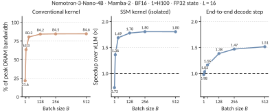
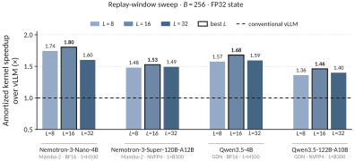
E.2.2 重放窗口遍历测试
E.3 推测解码
两个模型均使用自身的 MTP 头生成草稿。接受长度是每一步平均提交的 token 数。请求采用 GSM8K 提示词 (Cobbe et al., 2021)，以固定批量大小 提供服务；每个请求忽略序列结束标记并生成 256 个 token。预热后，计时区间覆盖包括预填充在内的整个请求。吞吐量等于生成的 token 总数除以实际经过的时间。
E.3.1 不同批量大小和验证长度下的推理服务吞吐量
表 8 和表 9 给出了在 与 的完整参数网格上，ReplaySSM 推测解码相对于常规 vLLM 推测解码的吞吐量；表 10 给出了 时的接受长度。两个模型均呈现三点规律。在 时，两种方法接近（Nemotron-3-Super-120B-A12B-NVFP4 上为 –，Qwen3.5-122B-A10B-NVFP4 上为 –），因为小批量下 ReplaySSM 消除的状态访问流量不是瓶颈。批量较大时，加速比随 和 增长，其收益有两个来源。常规推测解码为每个草稿 token 存储一个状态快照，因此状态访问流量和存储量随 、 共同增长；存储量限制了 GPU 内存所能支持的并发量，吞吐量从 开始饱和，并在较大 时降至标准解码之下。77 7 在 Nemotron-3-Super-120B-A12B-NVFP4 上， 时，常规推测解码在 达到峰值 9,551 tokens/s，在 时降至 5,644，低于标准解码的 6,807。ReplaySSM 仅在写回步写入状态，并使用图 4 中更快的内核进行验证，因此吞吐量能够持续增长。每个单元格中，两者的接受长度差异均在 个 token 以内（表 10），所以收益并非来自接受行为的差异。
| 批量大小 | |||||
|---|---|---|---|---|---|
| 批量大小 | |||||
|---|---|---|---|---|---|
| 显存不足 | |||||
| 显存不足 | |||||
| Nemotron-3-Super-120B-A12B-NVFP4 | Qwen3.5-122B-A10B-NVFP4 | |||
| 常规方法 | ReplaySSM | 常规方法 | ReplaySSM | |
E.3.2 GDN 的内核延迟
图 10 在 Qwen3.5-122B-A10B 上重复了图 4 的实验。GDN 与 Mamba-2 呈现相同趋势。常规内核的开销为一个标准解码步的 （ 时）和 （ 时）；ReplaySSM 则保持在 –（不超过 时）和 –（ 时），其中包含写回开销，每条带状范围覆盖 至 （附录 D.1）。 与 之间的跳变来自分块处理。部分内核内部会将验证窗口填充至四个 token 的倍数，因此 实际承担了处理八个 token 的开销。
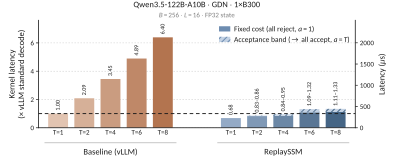
E.4 低精度状态
E.4.1 格式与量化
我们使用四种格式存储检查点。FP32 和 FP16 不进行缩放。FP8 使用 E4M3 元素，沿键维度每 128 个连续元素组成一块，共享一个 FP32 缩放因子；由于四个模型均有 ，这相当于每个状态行使用一个缩放因子。NVFP4 使用 E2M1 元素，每块 16 个元素共享一个 E4M3 缩放因子，每个状态另有一个 FP32 缩放因子。写回时，根据递推检查点和缓冲输入，以 FP32 累加得到新检查点，再将该 FP32 结果分别独立转换成各个存储副本，绝不从一个副本转换得到另一个。当递推检查点采用 FP16 或 FP8 时，转换使用随机舍入；转换为读取检查点时使用就近舍入。共享检查点只有一个副本，以随机舍入方式写入；附录 E.4.5 展示了改用就近舍入写入时的情况。量化仅作用于解码。预填充以全精度计算状态，舍入仅通过生成期间的检查点写入引入。所有低精度结果均使用 和标准解码。推测解码改变每步验证的 token 数，接受情况决定何时写回；两者都不改变被舍入的数值，因此误差机制相同。
E.4.2 低精度读取的延迟
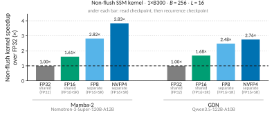
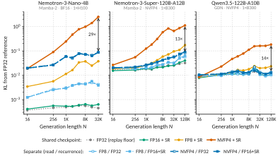
第 6 节使用分离检查点的目的，是防止舍入误差进入递推过程。较低精度的读取检查点还能减少每个非写回步搬运的字节数，因此也可能降低延迟；图 11 量化了这一收益。该实验使用 CuTe DSL 内核，在 下测量标准解码的非写回内核，只改变读取检查点，而将非写回步从不访问的 FP16+SR 递推检查点固定不变。相对于 FP32 状态，FP16 读取在 Mamba-2 和 GDN 上分别加速至 和 ，FP8 读取分别为 和 ，NVFP4 读取分别为 和 。这些比值仅针对非写回步。在完整窗口中，收益更小，因为写回步仍会读写较高精度的检查点；在 Mamba-2 上，当 时，NVFP4 读取在非写回步的加速比为 ，在整个窗口内为 。在推测解码下，收益还会进一步缩小，因为写回更频繁，而且每步计算量更大。
E.4.3 各模型的输出 KL
设置。
我们对四条数据流进行解码，每条数据流来自 PG-19 测试集 (Rae et al., 2019) 中的一本书，从 512-token 提示词开始，采用教师强制。每一步都记录模型的 logits，并将采样 token 替换为书中的下一个 token，因此所有配置接收相同的 token 序列，只有递归状态不同。指标是在完整词表上计算的 ，对四条数据流以及截至位置 的 256 个位置取平均；其中 为启用 CUDA 图的常规 FP32 状态解码。每种配置使用一个随机种子。
结果。
图 12 展示了图 5 之外的三个模型，四个模型均呈现三点规律。首先，共享低精度检查点的误差随 累积，而分离递推路径消除了其中大部分增长。在图中最后一个 处，NVFP4 读取配合 FP32 递推的 KL 比共享 NVFP4 检查点低 –（图 12 中的箭头）；除一个点外，FP16+SR 递推均紧跟 FP32 递推，差异不超过 。误差增长是减弱而非完全消失，因为在两个 Nemotron 模型上，分离递推路径的曲线在测量范围内仍增长了数倍。其次，较低的读取精度会抬高曲线起点。在 Nemotron-3-Nano-4B 上，当 时，FP8 读取的 KL 为 ，NVFP4 读取为 ，而基线为 。第三，Nemotron-3-Super-120B-A12B-NVFP4 和 Qwen3.5-122B-A10B-NVFP4 的基线约比 4B 模型高两个数量级，为 –。它们同时在模型规模、权重精度和专家路由上与 4B 模型不同，我们的数据无法将这一基线归因于其中任何单一因素。在这些模型上，两次常规 FP32 运行仅仅采用不同执行路径，即即时执行与 CUDA 图，其差异就已经达到这一水平。因此，该基线来自数值噪声，而非 ReplaySSM 引入的误差，应根据每种配置高出所属子图基线的程度来判断它。Nemotron-3-Nano-4B 仅绘制到 32K，因为超过这一长度后，其 FP32 参考分布会几乎全部集中于回合结束 token，从而压低所有配置的 KL。88 8 回合结束 token 的平均概率在 64K 时为 ，在 128K 时为 。其余三个模型在任何 下赋予该 token 的概率都低至无法测得。
E.4.4 KL 对窗口大小的敏感性
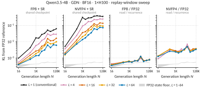
图 13 在 Qwen3.5-4B 上对 重复 KL 测量，涵盖两种共享配置和两种分离配置；这里的分离配置使用 FP32 递推。 对应常规解码，即每一步都写入状态并向低精度转换。它仅适用于共享检查点，因为分离配置需要 的窗口所产生的非写回步。
这两类配置对 的响应，分别对应第 6 节描述的两种机制。共享检查点在每次写回时都会重新量化，因此窗口越长，舍入事件越少，KL 越低。从 增至 ，检查点写入次数减少 。在同一区间，共享 FP8 检查点的 KL 降低 （K 时）和 （128K 时）；共享 NVFP4 检查点则分别降低 和 。收益小于舍入事件次数的同比例变化，这与附录 C.6 的预测一致。在我们采用的 下，共享 FP8 和 NVFP4 检查点在 128K 时的 KL 分别比常规逐步量化低 和 ，这是 ReplaySSM 对低精度状态的第一项收益。分离配置随 几乎不变。它们仅变化 –，对应的窗口大小从 变为 ，与 FP32 状态基线自身的波动（–）相近。读取检查点在每次写回时都由未量化的递推路径重新生成，并且从不反馈到递推中，因此无论此前经历过多少次写回，每个输出都只受到对干净状态的一次舍入， 对其影响很小。99 9 对于 GDN，非写回步缓存的修正量 根据低精度读取检查点计算，并参与窗口内后续输出的计算，因此仍对 存在轻微依赖。写回时会从高精度路径重新推导这些修正量（附录 B.4），所以该误差不会进入递推过程。
E.4.5 随机舍入与就近舍入的比较
附录 E.4.1 使用随机舍入写入递推检查点，使用就近舍入写入读取副本。表 11 给出了原因：在 的共享检查点上，以相同精度下 RTN 的 KL 与 SR 的 KL 之比比较两种舍入方式，从而抵消 FP32 基线。在较短生成长度下，RTN 与 SR 接近或更低。当 K 时，四个模型上 NVFP4 的 RTN 误差为 SR 的 –，FP8 则为 –。这是因为 SR 的随机误差从第一次舍入起就以完整幅度出现，此后仅按误差平方和的平方根增长；RTN 的每步偏差虽小，却线性累加，并在累积足够多步后超过前者（附录 C.6）。随后，这一比值随 上升；对每个模型的 FP8 而言，至 16K token 时均已超过一。在两个 GDN 模型上，RTN 使 FP8 和 NVFP4 状态分别在达到 128K 和 64K token 时变成非有限值，而 SR 在所有测量点都保持有限。未列入表中的 FP16 在两个 Mamba-2 模型上也出现相同交叉：在 Nemotron-3-Nano-4B 的 32K 处，RTN 达到 SR 的 ，在 Nemotron-3-Super-120B-A12B 的 128K 处为 ；在 GDN 模型上则保持在 以内。因此，需要读回并参与递推的检查点应使用 SR，而只舍入一次且从不反馈的副本更适合 RTN。
| 生成长度 | |||||
|---|---|---|---|---|---|
| 模型 | 精度 | 1K | 8K | 32K | 128K |
| Nemotron-3-Nano-4B | FP8 | 0.59 | 1.3 | 6.6 | – |
| NVFP4 | 0.51 | 0.67 | 0.90 | – | |
| Nemotron-3-Super-120B-A12B | FP8 | 1.1 | 1.4 | 2.0 | 2.2 |
| NVFP4 | 0.44 | 0.45 | 1.4 | 0.95 | |
| Qwen3.5-4B | FP8 | 0.76 | 1.2 | 2.2 | 非有限值（div.） |
| NVFP4 | 0.40 | 1.0 | 4.1 | 非有限值（div.） | |
| Qwen3.5-122B-A10B | FP8 | 0.94 | 0.85 | 1.7 | 非有限值（div.） |
| NVFP4 | 0.50 | 1.4 | 13 | 非有限值（div.） | |
E.4.6 下游准确率
| MMLU-Pro | GPQA-Diamond | Math-L5 | ||||
| 配置 | （百分点） | token 数（千） | （百分点） | token 数（千） | （百分点） | token 数（千） |
| Nemotron-3-Nano-4B | ||||||
| FP32 准确率（%） | 2.9 / 6.9 | 10.3 / 26.7 | 2.1 / 4.5 | |||
| 共享 FP16+SR | 2.9 / 6.8 | 10.7 / 29.9 | 2.2 / 4.9 | |||
| 共享 FP8+SR | 3.0 / 6.9 | 10.7 / 29.0 | 2.2 / 4.9 | |||
| 共享 NVFP4+SR | 2.1 / 3.6 | 4.3 / 5.0 | 1.7 / 3.2 | |||
| 分离 FP8 / FP16+SR | 2.9 / 6.7 | 10.6 / 28.8 | 2.2 / 4.5 | |||
| 分离 NVFP4 / FP16+SR | 3.1 / 7.2 | 12.0 / 33.0 | 2.2 / 4.7 | |||
| 分离 NVFP4 / FP8+SR | 3.0 / 7.0 | 11.7 / 31.3 | 2.3 / 4.9 | |||
| Nemotron-3-Super-120B-A12B | ||||||
| FP32 准确率（%） | 3.7 / 10.4 | 19.6 / 66.1 | 4.2 / 9.4 | |||
| 共享 FP16+SR | 3.7 / 10.4 | 19.5 / 64.4 | 4.2 / 9.6 | |||
| 共享 FP8+SR | 3.7 / 10.2 | 19.5 / 68.4 | 4.2 / 10.0 | |||
| 共享 NVFP4+SR | 3.7 / 10.5 | 28.3 / 93.2 | 5.0 / 10.2 | |||
| 分离 FP8 / FP16+SR | 3.7 / 10.3 | 18.8 / 65.5 | 4.2 / 10.1 | |||
| 分离 NVFP4 / FP16+SR | 3.8 / 10.8 | 20.2 / 72.7 | 4.5 / 10.1 | |||
| 分离 NVFP4 / FP8+SR | 3.7 / 10.5 | 19.4 / 64.9 | 4.3 / 9.6 | |||
| Qwen3.5-4B | ||||||
| FP32 准确率（%） | 12.5 / 27.4 | 29.5 / 61.0 | 15.9 / 31.3 | |||
| 共享 FP16+SR | 12.5 / 27.1 | 29.9 / 62.2 | 15.9 / 32.4 | |||
| 共享 FP8+SR | 12.5 / 27.1 | 29.5 / 58.0 | 16.0 / 31.8 | |||
| 共享 NVFP4+SR | 11.8 / 25.9 | 27.8 / 60.4 | 16.2 / 32.9 | |||
| 分离 FP8 / FP16+SR | 12.5 / 27.3 | 29.7 / 58.8 | 16.2 / 32.5 | |||
| 分离 NVFP4 / FP16+SR | 12.4 / 27.1 | 29.6 / 58.0 | 15.9 / 31.3 | |||
| 分离 NVFP4 / FP8+SR | 12.4 / 27.3 | 29.4 / 60.6 | 16.1 / 32.3 | |||
| Qwen3.5-122B-A10B | ||||||
| FP32 准确率（%） | 8.2 / 17.0 | 15.2 / 27.8 | 12.2 / 23.7 | |||
| 共享 FP16+SR | 8.1 / 16.7 | 15.3 / 28.3 | 12.0 / 22.7 | |||
| 共享 FP8+SR | 8.3 / 17.1 | 15.5 / 29.2 | 12.1 / 23.4 | |||
| 共享 NVFP4+SR | 7.2 / 13.9 | 12.9 / 33.8 | 9.8 / 16.4 | |||
| 分离 FP8 / FP16+SR | 7.9 / 16.2 | 15.3 / 28.4 | 12.4 / 24.4 | |||
| 分离 NVFP4 / FP16+SR | 7.8 / 15.8 | 15.5 / 30.4 | 12.0 / 22.6 | |||
| 分离 NVFP4 / FP8+SR | 7.9 / 16.1 | 15.7 / 30.2 | 11.9 / 22.6 | |||
流程。
MMLU-Pro 有 12,032 道题，GPQA-Diamond 有 198 道题、每题重复三次，Math-L5 有 1,324 道题。每个模型采用其推荐的采样设置。Nemotron 模型使用温度 、top- ；Qwen3.5-4B 使用温度 、top- 、top- 和存在惩罚 ；Qwen3.5-122B-A10B 使用温度 、top- 和 top- 。每个模型在每个基准上的输出预算，设在 FP32 解码完成长度的第 99 百分位附近；达到预算上限的生成被计为错误，因为宽松评分会偏袒截断最多的配置。同一模型的所有配置共享预算、批量大小、采样设置及每题随机种子；相对于 FP32 的变化是在两次运行共同覆盖的题目上计算的，因此采用的是配对比较。
结果。
表 12 给出了表 2 背后各模型的变化，并列出每个单元格的平均输出长度和第 90 百分位输出长度。在每个模型上，共享 FP16+SR 和 FP8+SR 检查点相对于 FP32 的差异都处于基准测量噪声范围内。共享 NVFP4+SR 检查点的损失随生成长度变化。对每个模型而言，GPQA-Diamond 都是三个基准中生成最长、损失也最大的一个：Nemotron-3-Nano-4B 损失 个百分点，Nemotron-3-Super-120B-A12B 为 ，Qwen3.5-4B 为 ，Qwen3.5-122B-A10B 为 ；相比之下，三个较大模型在 MMLU-Pro 和 Math-L5 上最多损失 个百分点。最小的模型 Nemotron-3-Nano-4B 在三个基准上均损失 至 个百分点。GPQA-Diamond 的部分损失源于未能完成生成。在 Nemotron-3-Super-120B-A12B 上，共享 NVFP4 配置有 的生成达到预算上限，而 FP32 为 ；仅看双方都完成生成的配对样本，损失为 个百分点。长度列也显示了同样的情况：平均长度为 28.3K token，第 90 百分位位于预算上限。这与误差在生成过程中累积的机制一致（第 3.3 节）；附录 E.4.7 又在各个基准内部证实了这一点，此时长度与基准身份不会混淆。分离检查点恢复了大部分损失。采用 NVFP4 读取配合 FP16+SR 或 FP8+SR 递推时，三个较大模型在所有基准上均与 FP32 相差不超过 个百分点；Nemotron-3-Nano-4B 在 GPQA-Diamond 上仍损失 至 个百分点，在其他基准上损失 至 个百分点。GPQA-Diamond 每个单元格有 594 次生成，按问题聚类的标准误为 至 个百分点，因此只能分辨其中较大的变化。
长输入上下文。
上述三个基准从输出侧测试长上下文：提示词约 1K token，生成可达数万 token。RULER-128K (Hsieh et al., 2024) 则从输入侧测试，提示词约 130K token，回答长度为 18 至 81 个 token。表 13 给出了各配置在其 13 个任务、每任务 100 个样例上的 RULER 分数，采用 RULER 规定的关闭思考、贪心解码流程。所有模型的每种配置与 FP32 的差异均不超过 个百分点，共享 NVFP4+SR 检查点也不例外。这符合预期。量化只作用于解码（第 7.4 节），因此这里每个请求仅对预填充后的状态量化一次，最多写回五次；而推理基准中，每个请求会写回数百至近两千次。因此，共享低精度检查点的准确率损失出现在长输出场景，而非长输入场景。
| 配置 |
|
|
|
|
|||||||
|---|---|---|---|---|---|---|---|---|---|---|---|
| FP32 得分 | |||||||||||
| 共享 FP16+SR | |||||||||||
| 共享 FP8+SR | |||||||||||
| 共享 NVFP4+SR | |||||||||||
| 分离 FP8 / FP16+SR | |||||||||||
| 分离 NVFP4 / FP16+SR | |||||||||||
| 分离 NVFP4 / FP8+SR |
E.4.7 不同生成长度下的准确率
单一准确率数值无法说明某种配置在哪些情况下出现损失。因此，图 14 将图 6 扩展至全部四个模型和三个基准，绘制了 FP32 参考、共享 NVFP4+SR 检查点，以及 NVFP4 读取配合 FP8+SR 递推三种配置下，准确率随生成长度的变化。对于每个模型和基准，按每道题 FP32 输出长度的四分位数分组。每次生成按照对应 FP32 生成的长度分组，而不是按自身长度分组，因为性能退化的配置会反复冗长生成，若按其自身长度划分，就会显得更长。FP32 曲线来自另一次独立的 FP32 运行，因为定义分组的那次运行会将自身所有被截断的生成都放入最高长度组。每个组绘制在其参考长度中位数的位置。在 MMLU-Pro 和 GPQA-Diamond 上，FP32 准确率本身也会随分组变化下降 至 个百分点，因为较长生成来自更难的问题；因此应关注同一组内某种配置与 FP32 的差距，而不是绝对准确率。
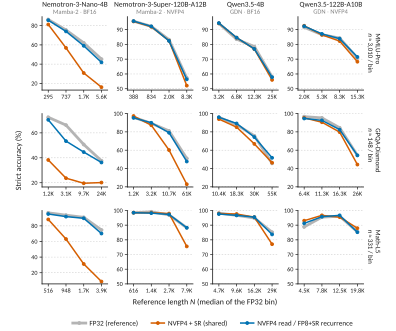
凡是共享 NVFP4 检查点出现准确率损失的地方，其与 FP32 的差距都会随长度增大。对于三个较大模型，它在较短长度组与 FP32 相当，在最长组出现损失；Nemotron-3-Super-120B-A12B 的 GPQA-Diamond 上，损失最高达 个百分点，而每一次此类最长组损失都伴随着比 FP32 更多的截断。在 Nemotron-3-Nano-4B 上，它在每个组都低于 FP32，差距在 MMLU-Pro 上从 增至 个百分点，在 Math-L5 上从 增至 个百分点。NVFP4 读取配合 FP8+SR 递推，在 48 个组中的 41 个组里都落在 FP32 的区间内。
附录 F 未来工作：利用衰减跳过检查点读取
附录 G 采用情况
ReplaySSM 已被大规模生产模型和开源推理软件采用。GLM-5.3-Flash 在其生产推理服务栈中使用 ReplaySSM (Z.ai, 2026a)，Z.ai 的基础设施报告 (Z.ai, 2026b) 描述了将其加入 KDA 解码内核的过程。Kimi-K3 (Kimi Team, 2026) 在其 KDA 层中缓存草稿 token 的 SSM 输入用于验证，并将 ReplaySSM 作为同期方法引用。ReplaySSM 还已集成到开源推理服务系统 TensorRT-LLM、vLLM 和 SGLang，以及内核库 FlashInfer 中。
本文作者参与撰写了博客文章 (Dao AI Lab, 2026)，并贡献了 TensorRT-LLM、1010 10 https://github.com/NVIDIA/TensorRT-LLM/pull/14203 vLLM1111 11 https://github.com/vllm-project/vllm/pull/48018、 https://github.com/vllm-project/vllm/pull/52506 以及 https://github.com/vllm-project/vllm/pull/52928。 和 FlashInfer1212 12 https://github.com/flashinfer-ai/flashinfer/pull/3975 以及 https://github.com/flashinfer-ai/flashinfer/pull/4081。 中的实现，覆盖 Mamba-2 和 GDN 的标准解码与推测解码。